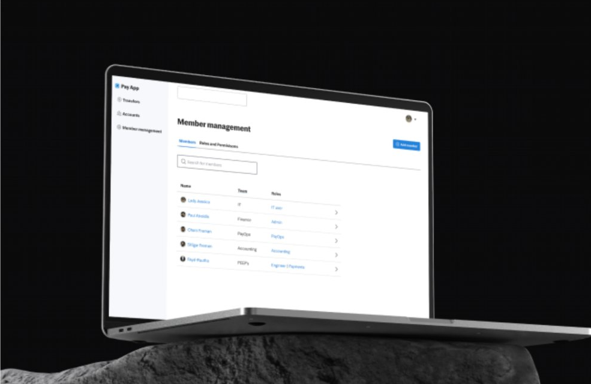
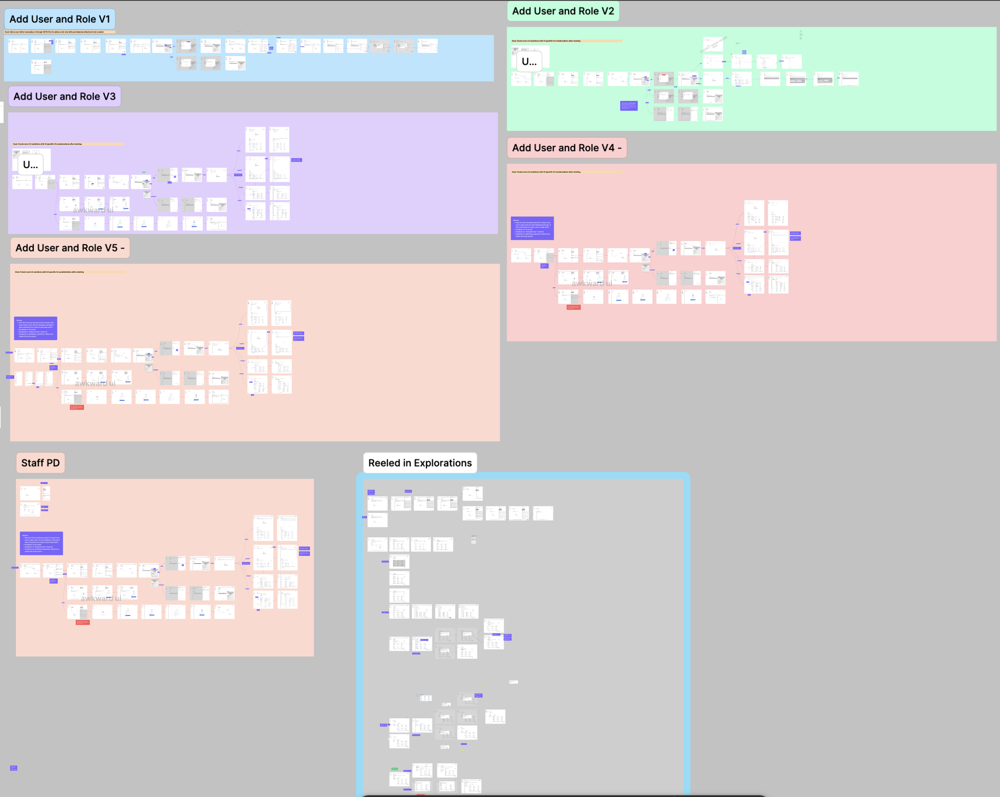
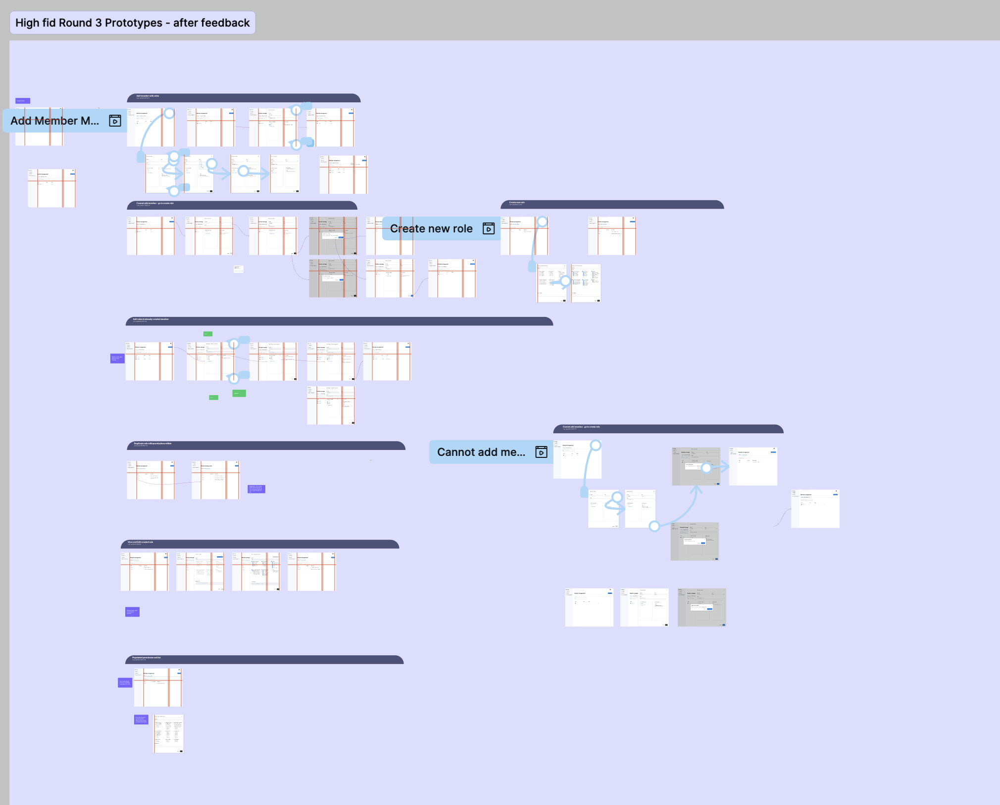

PayApp is an internal tool that was deployed in 2025. The API is growing due to PayApp being added as an additional functionality for internal users. This led Justworks to needing the appropriate risks and controls to a select group due to the risk surrounded the money movement capabilities of the platform.
PayApp currently allows full access to all users that are added to the platform. This creates risk of control on the platform which is increasing as more money movement capabilities are added.
Build roles and permissions in a way that internal teams can manage their own provisioning through a ticketing service without needing PAY to intervene.
This project utilized a heuristic non-linear approach due to new information and changes actively happening within the company.
Going through this phase meant listening to many different perspectives within PayOps and IT to get a general grasp on their day-to-day tasks along with interruptions and how they sit with themselves. This also included a competitive analysis of how other FinTech companies were provisioning roles and permissions for users to have access to finances where large sums of money are involved. I was unfamiliar with the financial world but made it my mission to understand all moving parts from ACH to Plaid and even penny tests.
I became proficient in understanding the perspective of the Justworks employees' workflows by organizing unstructured interviews to allow the conversation to flow. Starting off without a rigid interview script allowed the interviewees to speak more openly and freely about their work which not only offered me technical insight into their day-to-days but emotional as well. This allowed me to observe which tasks they found the most joy in and which duties were not as enjoyable.
The Project Manager, Staff Product Designer, Software Engineers, and I sat in on a demo of the competitor Modern Treasury to see how they provision roles and permissions access as well as for whom. This showed us their internal UI perspective which utilizes drawers and modals to maintain a simplified process.

Multiple site maps were created simultaneously when wireframing to develop both the interface and users experience. This process also helped determine where the Roles and Permissions feature will reside within PayApp.
After the site map iterations were developed, user flows were generated alongside low and mid-fidelity wireframes.
Persona names are a deliberate creative choice from the original research deck — kept here as a stand-in for real portraits.
The member list will never be created in an empty state because a Justworks I.T. user will be the first user manually added by engineering.
Justworks I.T. and admins should be able to create roles encompassing a set of permissions. These roles can then be assigned to users to provide them with the appropriate access.
To add a user to the system, a role must be created with permission sets within first. If no currently added role fits the newly added member, a new role can be created from the "create new role" link. However, information added to the drawer will not be saved if a role without provisions is assigned — halting the task and re-verifying the information helps confirm that the user is assigning the correct role to the intended member.
In conjunction with performing empathy interviews and gaining insight, low-fidelity sketches were drafted to explore possible user flows and screens with a clear end goal of the user being able to add a role while consistently questioning other design solutions.
Low to mid-fidelity wireframes was an exploratory and iterative process. There were consistent touch bases with cross-functional stakeholders and the software engineering team to gain feedback and have visibility as early as possible.
High-fidelity prototypes were presented to the affected stakeholders in PayOps and IT to gather feedback. This was not the first time that they had seen these screens. Throughout the scope of this project, the team and I had regular check-ins with the users to continue gathering quantitative and qualitative data to ensure PayApp will be a scalable product. The software engineering team was also present to give comments to remain active within the design process from the ground up.
This then led to the flow of Lady Jessica giving Paul Atredies his rightful role.
Lady Jessica has the power to not only add a new admin but to dictate their role within the internal tool of PayApp. But she must remain vigilant and make sure not to add a member without first granting their role within the system.

It was a fulfilling project to be able to go from 0 to 1 with a hard-stop deadline — and being notified after handoff that it was deployed.
A feature added to allow only specific users to be able to transfer a certain amount of money would be beneficial to track both internal and external transfers.
"Whimsy is the magic that turns the ordinary into the extraordinary."